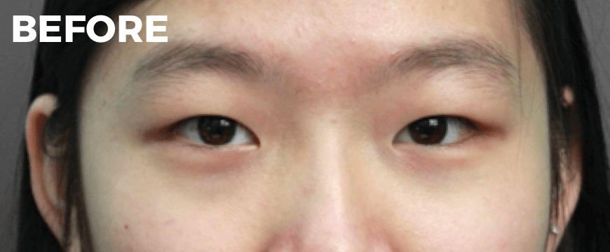
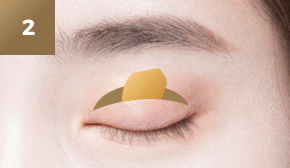
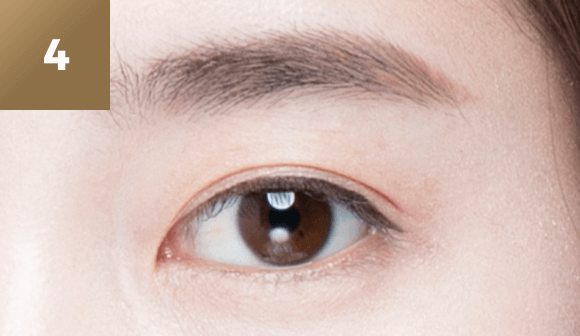

처음도 마지막도
연세자연미에서
#쌍커풀
재수술
-

수술 시간
1시간
-

마취방법
수면/국소마취
-

실밥제거
4~5일후
-

내원치료
1~2회
-

회복기간
개인차 있음
쌍커풀 재수술을
하기 위해선?
재수술을 하기 위해서는 적절한 시기를
파악하는 것이 매우 중요합니다.
첫수술로 인한 유착현상이 사라지고
눈의 조직이 안정화된 후 재수술이
진행되는데 일반적으로 6개월 이상
1년 경과 후가 적절합니다.


눈 재수술 수술방법
재수술은 특히 원인을 정확하게 파악하는
것이 가장 중요합니다.
개인마다 눈 뜨는 근육, 피부 두께,
동공의 위치, 눈꼬리의 각도가 다르기
때문에 개인의 얼굴에 맞는 정확하고
꼼꼼한 분석과 섬세한 수술이 필요합니다.
현재 나의 눈 상태를 확인합니다
전문의의 진단을 통해 나의 눈 상태를
정확히 확인하고 어떤 수술이
필요할지 결정합니다.
-
안검하수 유무
-
몽고주름의 형태
-
눈꼬리 각도
-
피부 처짐
-
눈 사이 간격
-
사시유무
쌍커풀 수술방법
-
마취를 하고 절개와 박리를 통해
이전 수술의 흉터를 교정합니다. -

필요한 경우 피부조직, 지방 등을
추가로 제거합니다. -

새로운 쌍커풀 라인을 만듭니다.
-

봉합을 하고 수술을 마무리합니다.